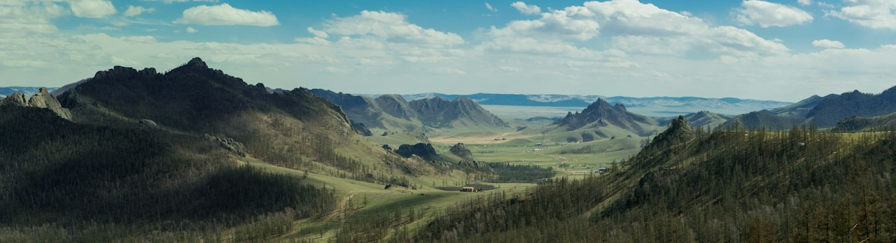
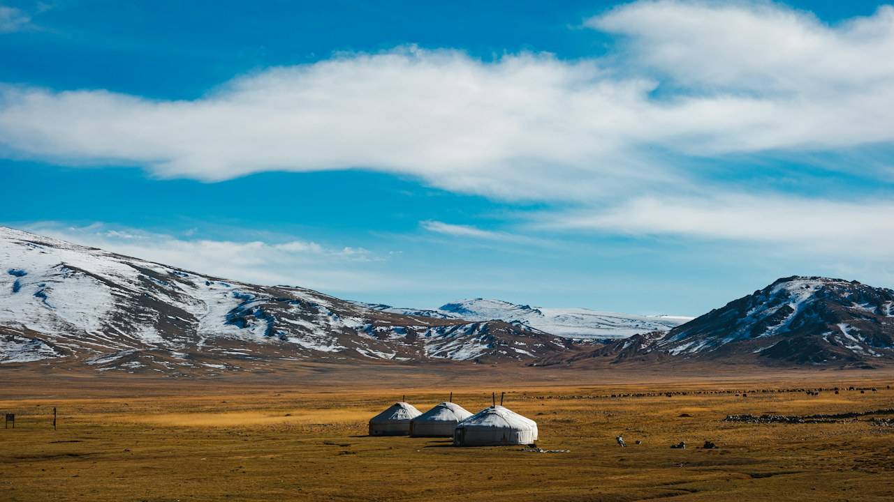
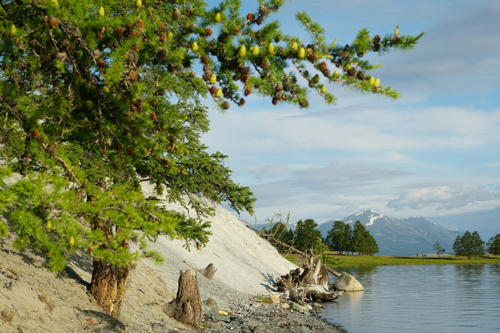
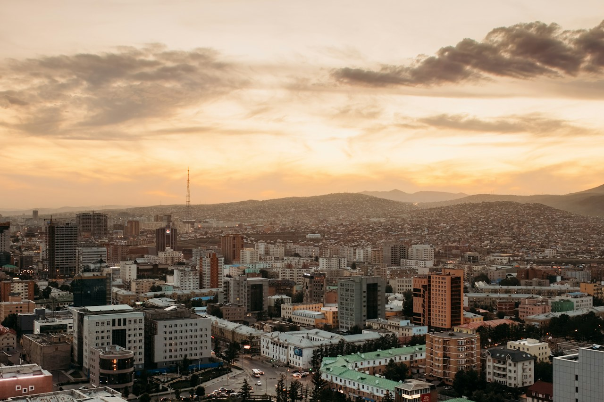

Зураг ачаалагдсангүй. Энэ хэсэг дээр дарж мэдээллийг үзээрэй.
БайгальЗургийн ард
- Нэр
- Тэрэлжийн нам гүм
- Нийтэлсэн огноо
- Газар
- Тэрэлж, Монгол
Ногоон толгод, хадат оргил, тэнгэрийн зөөлөн хэмнэл.
Зураг: elbegsaikhan Tsogtbayar ↗Монгол орноор · Зургийн тэмдэглэл
Уулсын нам гүмээс хотын үдэш хүртэл.
Монгол орны өнгө төрхийг зургаан кадраар мэдрээрэй.

Онцлох агшин / 0101 / Цуглуулга
Зураг дээр дарж зургийн арын түүхийг үзээрэй. Өөр зураг нээхэд өмнөх нь хаагдана. Гарын Tab, Enter, Space товчоор мөн ажиллана.
Зураг ачаалагдсангүй. Энэ хэсэг дээр дарж мэдээллийг үзээрэй.
БайгальЗургийн ард
Ногоон толгод, хадат оргил, тэнгэрийн зөөлөн хэмнэл.
Зураг: elbegsaikhan Tsogtbayar ↗
Зураг ачаалагдсангүй. Энэ хэсэг дээр дарж мэдээллийг үзээрэй.
БайгальЗургийн ард
Гэрэл сүүдэр ээлжлэхэд говийн хад өөр өнгөөр харагдана.
Зураг: Patrick Rosenberger (Schneider) ↗
Зураг ачаалагдсангүй. Энэ хэсэг дээр дарж мэдээллийг үзээрэй.
АхуйЗургийн ард
Цаст уулсын бэл дэх гэрүүд, хязгааргүй мэт орон зай.
Зураг: Fadhil Abhimantra ↗
Зураг ачаалагдсангүй. Энэ хэсэг дээр дарж мэдээллийг үзээрэй.
БайгальЗургийн ард
Нуурын эрэг дагуух модод, усны өнгөний тайван зохицол.
Зураг: Ariungoo Batzorig ↗
Зураг ачаалагдсангүй. Энэ хэсэг дээр дарж мэдээллийг үзээрэй.
ХотЗургийн ард
Уулсын дундах хотыг үдшийн дулаан гэрэл тэвэрнэ.
Зураг: Bree Evans ↗
Зураг ачаалагдсангүй. Энэ хэсэг дээр дарж мэдээллийг үзээрэй.
АхуйЗургийн ард
Ус, уул, морьтон хүмүүсийн аяллын нэгэн агшин.
Зураг: Fadhil Abhimantra ↗02 / Зурган кино
Цомгийн зургаан зургийг нэгтгэсэн богино, дуугүй эвлүүлэг. Тоглуулах товчийг дараад аяллаа эхлүүлээрэй.
CC буюу хадмалын цэснээс Монгол тайлбарыг сонгож болно.
Зураг тус бүр 3 секунд харагдана. Яриа болон хөгжим агуулаагүй.
03 / Байршил
Онцлох зургийн газар болох Тэрэлжийн орчмыг газрын зураг дээрээс сонирхоорой. Тэмдэглэгээ нь бүсийн ерөнхий байршил юм.
Том газрын зураг нээх ↗ — шинэ цонхГазрын зураг: © OpenStreetMap contributors. Интернет шаардлагатай. Ачаалахгүй бол дээрх холбоосоор нээнэ үү.
Ц.Маргадын Веб зохиомж хичээлийн лаборатори 6, 7. Байгаль, хот, ахуйн өнгө төрхийг сонгон нэгтгэсэн сургалтын цомог. Зургуудыг доорх гэрэл зурагчид бүтээсэн; огноо нь Unsplash-д нийтэлсэн огноо болно.
Зургуудыг Unsplash License-ийн дагуу ашиглав. Хэмжээг багасгаж, карт дээр хүрээнд тааруулан харуулсан. Видео нь эдгээр зургаар хийсэн эвлүүлэг.